Summary:
This data analysis report presents insights into India's tourism industry using Python. The
analysis was conducted on a comprehensive dataset that captured various aspects of
tourism in India. By applying data analysis techniques, we gained valuable insights into the
contribution of tourism to India's economy, employment, and the popularity of different tourist
destinations across the country. The report highlights the significant role of tourism in India's
GDP and employment, emphasising its importance as a key economic sector. Additionally,
the analysis showcases the diverse attractions that India offers, ranging from wildlife safaris
and nature-seeking spots to historical landmarks and spiritual destinations. The findings of
this report provide valuable information for policymakers, businesses, and stakeholders to
make informed decisions and develop strategies to further enhance India's tourism industry.
Table of Contents:
● Methodology
● Key Findings
● Conclusion
Methodology:
To conduct this data analysis, a systematic approach was followed to ensure accuracy and
reliability in the findings. The methodology encompassed the following steps:
1. Data Collection: The data obtained from data.gov.in . We are using 8 different data
sets which include statistical data about foreign tourist arrivals in India from 1981 to
2020, statistics of FTA distribution in India by age from 2001 to 2019 in percentage,
quarterly distribution statistics of the percentage of foreign tourists visiting India from
2001 to 2019, comparisons between world tourism and Indian tourism with world
rankings from 2001 to 2021, statistics of ITAs in India in 2019 This dataset includes
the percentage distribution of international tourist visits to India by specific factors
grouped by countries (also regions), statistics of the number of Domestic and foreign
tourists to popular monuments in India during 2019,2020 and 2021 along with their
regions, statistics of the contribution to the share market of Indian tourism in
percentages from 2017 to 2019, statistics of domestic and foreign tourists visiting
India in 2019 and 2020 per state.
2. Data Preprocessing: Before analysis, the collected data underwent preprocessing
steps to ensure its quality and consistency. This involved cleaning the data by
removing duplicates, handling missing values, and resolving any inconsistencies or
errors, reshaping the data, renaming the index, dropping columns, combining data,
parsing the dataframe.
3. Statistical & Exploratory Data Analysis (EDA): Statistical analysis data Analysis
was conducted to present numerical data to uncover patterns, relationships, and
trends. It involves applying statistical methods and techniques to draw meaningful
conclusions and make informed decisions based on the data. Exploratory Data
Analysis was conducted to gain a preliminary understanding of the data. Descriptive
statistics,Visualisation technique plotting including measures of central tendency and
dispersion, were calculated to summarise the data.
4. Reporting: The findings, insights, and recommendations were compiled into a
comprehensive data analysis report. The report presented the analysis results in a
clear and organised manner using visualisations, tables, and concise explanations.
Key Findings-
I have analysed how tourism has been faring in India during all these years and found some
helpful insights. I have taken eight different aspect to analyse & find insights
A.Statistics of International Tourists to India [1981 - 2020]-
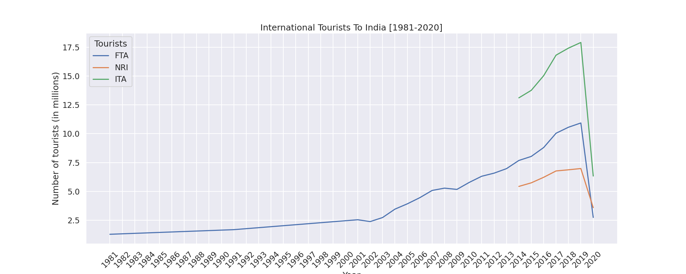
As we can see from the above multi line graph, there has been a steady increase in the
number of tourists visiting India until 2020 as COVID-19 restrictions led to a huge blow on
the Tourism sector. The pandemic has not only jeopardised the growth prospects of the
sector but also caused a significant economic slump, which the sector would take some time
to recover from.
Also, the growth in FTAs in India over the years, viz. 2003 to 2007, 2010, 2014 and 2017
saw a double-digit positive growth, while there was negative growth in the years 1991, 2001,
2002 (September 11 attacks i.e 9/11 attacks in U.S and many other factors) and 2009
(because of the 26/11 attack in Mumbai (Bombay), Maharashtra, India).
Note: Ministry of tourism initiated compilation and dissemination of arrivals of Non-Resident
Indians (NRIs) and the Foreign Tourist Arrivals (FTAs) since 2014.
B. Quarterly Distribution of Tourists [2001 - 2019]-
1. Total Arrivals [2001-2019]:
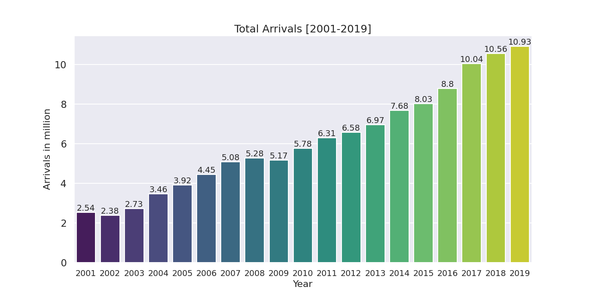
As we can observe from the above bar plot, tourism has been improving in India even if
there were a few exceptions during certain years.
2. Quarterly Distribution of FTAs during 2017, 2018 and 2019:
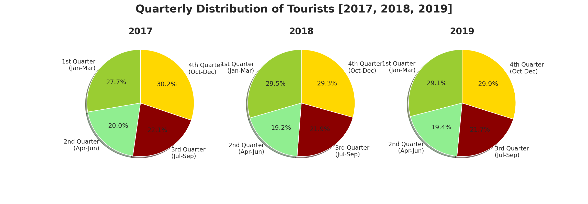
As per the pie charts above, we can observe that the number of FTAs In India has been
highest during the winter season (4th Quarter (Oct-Dec) and 1st Quarter (Jan-Mar)) (best
season to visit India because of favourable weather and temperature) and has been the
lowest during the summer season (2nd Quarter (Apr-Jun)) (because of heat) during the
years 2017, 2018 and 2019.
3. Average Percentage Distribution of FTAs Quarterly [2001 - 2019]:
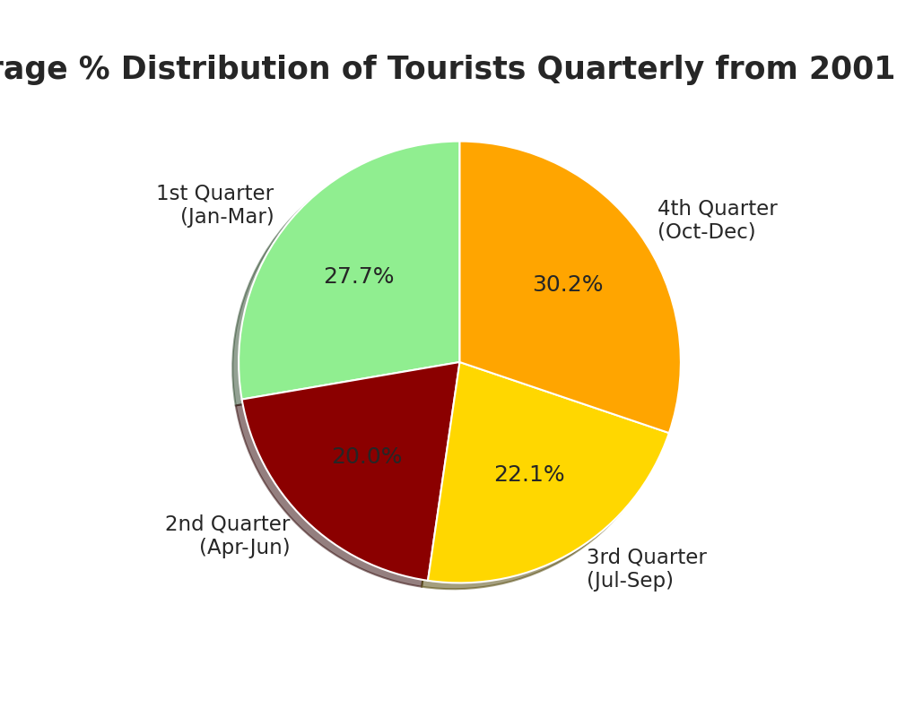
As per the pie chart, we can observe that on an average, the number of FTAs during the
winter season has been the highest while it was the least during the summer season from
2001 to 2019.
C. Statistics of ITAs to India based on purpose 2019-
1. Statistics of ITAs to India based on purpose 2019 [Region Wise]:
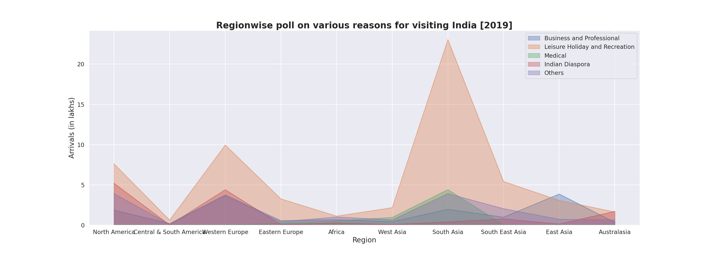
As we can observe from the above area plot, South Asia (mostly from Bangladesh)
contributes the highest tourist visits to India. While the reason for visiting India from the
above-mentioned regions is mostly for Leisure Holiday and Recreation, it is the least for
Medical purposes among the 4 specific reasons.
Medical tourism in India is doing exceptionally well. India ranks among top 3 medical tourism
destinations in Asia owing to its low cost of treatment, quality healthcare infrastructure, and
availability of highly-skilled doctors. During the recovery period, patients can turn to a
multitude of therapies like Ayurveda, Naturopathy and Yoga. Another major factor that
makes India a desirable medical tourism destination is the fact that it has English speaking
doctors, reducing the language barrier for foreign tourists.
2. Tourists to India from Top 5 countries - 2019:
As we can observe from the above multibar graph, Bangladesh contributes the most to the
Tourism sector of India. Most visitors from Bangladesh primarily visit India for Leisure.
According to India's ministry of tourism's 'India Tourism Statistics at a Glance 2021' report,
Bangladesh accounted for 23.6 percent of overall foreign tourist visits to India. This implies
that it has been and is currently the primary source of international tourists to India.
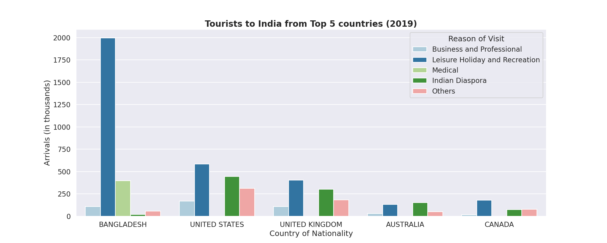
3. Average Distribution of Tourists to India based on the purpose of visit - 2019:
Thus from the above pie chart, it can be inferred that most tourists visit India primarily for
leisure.
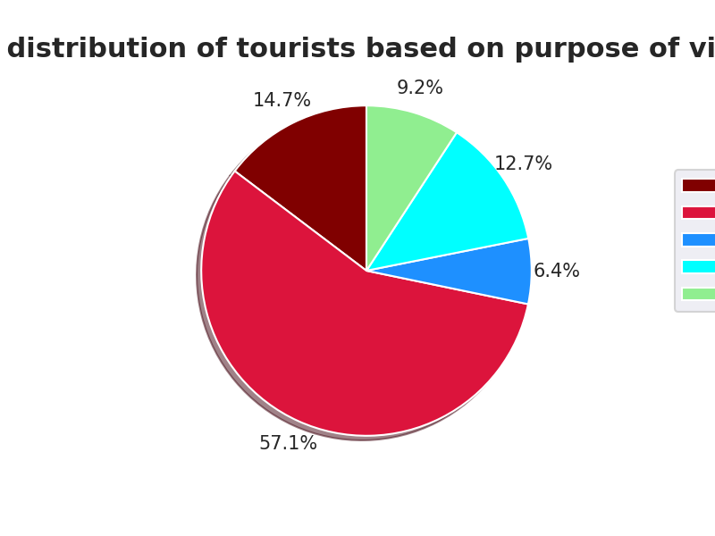
Each state in India is famous for different tourist attractions. Different places in India will
entertain tourists with natural wonders, tranquil places, history and architecture, spirituality
etc. All these aspire visitors to visit India for a memorable trip and is the perfect destination
for leisure.
D. Contribution Statistics to the Share Market of Indian Tourism [2017 - 2019]-
1. Contribution to the Share Market of Indian Tourism region wise [2017 - 2019]:
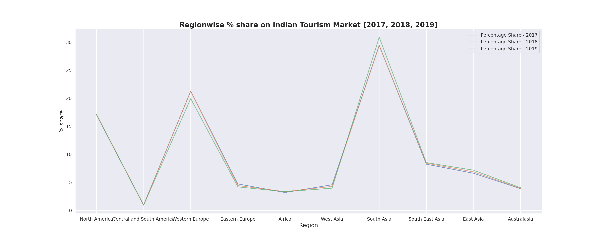
As per the above multi line graph, it is evident that South Asia (mostly from Bangladesh),
Western Europe (mostly from U.K) and North America (USA and Canada) contribute the
highest towards the Indian Tourism share market.
Since 2014, adhering to the definition of International Tourist Arrivals, India has started the
inclusion of figures of arrivals of Non resident Indians. This has resulted in improvement of
numbers pertaining to contributions to the Indian Tourism Share Market.
2. Contribution to the Indian Tourism Share Market country wise [2017 - 2019]:
From the above pie charts, we can infer that during the years 2017, 2018 and 2019, the
contributions to the Indian Share Market by the Major countries has been constant with
Bangladesh, U.S.A and U.K. on the lead.
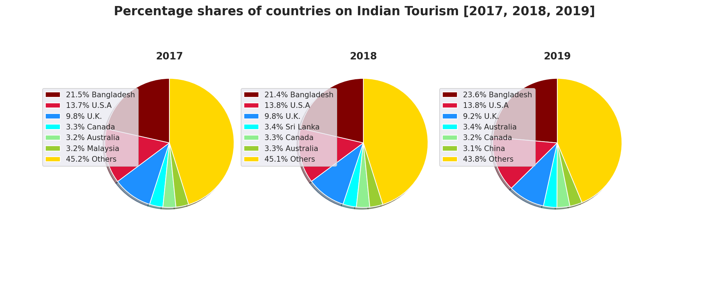
E. Tourist segregation based on age [2001 - 2019]-
1. FTAs segregated based on age [2001 - 2019]:
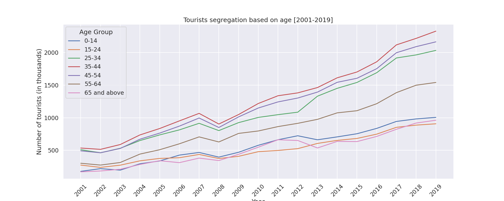
From the above multi line plot, we can infer that most of the tourists who visited India from
2001 to 2019 belonged to the age group of late 20s to early 50s. The proportion of FTAs in
different age groups has not changed much in the last few years. The highest numbers of
FTAs in India were from the 35-44 years age group (21.0%) followed by the age groups of
45-54 years and 25-34 years. The lowest number of FTAs occurred in the age-group of
15-24 and 65 & above (8.7%).
2. Average %age distribution of Tourists based on age [2001 - 2019]:
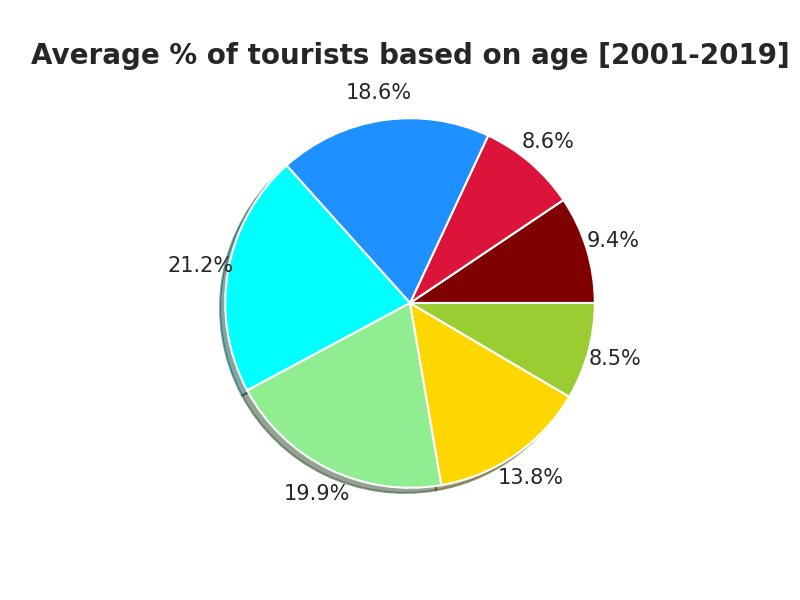
As per the above pie chart, it can be deduced that the highest percentage of tourists visiting
India are youths and the middle ages. This can be due to the fact that the youngsters aren't
that well off when it comes to the capital and the senior citizens would prefer to travel to
places that are relaxing and comfortable or India doesn't end up attracting tourists from
these age groups.
As much as the elderly might avoid and refrain; travelling is the perfect resort for them to
rejuvenate themselves and finally enjoy life the way they want to. Just like kids or the young,
even they need a vacation for a variety of reasons- the primary one being that it boosts their
physical, mental, and emotional health. But, Most people feel that the biggest deterrent to
tourism is lack of infrastructure, Lack of good budget hotels , proper roads as well as
hygiene and sanitation are problems that put off most would-be travellers to India.
The youngsters on the other hand could contribute largely to Indian tourism especially
through education. Although the main purpose of international student mobility is to study, it
can also be considered a type of tourist activity. India is still not seen by international
applicants as a destination for education because of its education system which needs a lot
of improvement. If Indian education does improve and gets recognized by the world, then
there could be a rise in the international students to India which could indirectly improve the
contribution by the youngsters to Indian Tourism.
F. Indian Tourism State Wise Statistics [2019 - 2020]:
1. Foreign tourists per State/UTs [2019 - 2020]:

As per the above horizontal barplot, it can be observed that during the year 2019, Tamil
Nadu, Maharashtra, Uttar Pradesh, Delhi and others had the highest number of foreign
tourists to their state. It can also be inferred that significant revenue was derived from
Tourism in these states. Thus during 2020, due to Covid-19 restrictions, there was an
enormous decrease in the Tourists which led to a huge blow to the Tourism sector in these
states.
Tamil Nadu has the largest tourism industry in India with a percentage share of 21.31% and
21.86% of domestic and foreign tourist visits in the country. Thus the steep decline in tourist
traffic in 2020 on the advent of pandemic severely affected the Tourism sector of the state.
2. Domestic tourists per State/UTs [2019 - 2020]:
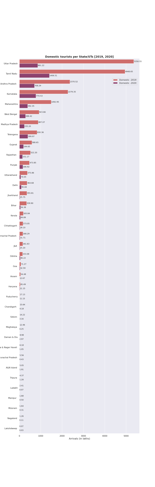
As per the above horizontal bar graph, it can be observed that during the year 2019, Uttar
Pradesh, Tamil Nadu, Andhra Pradesh, Karnataka and others had the highest number of
domestic tourists to their state. It can also be inferred that significant revenue was derived
from Tourism in these states. Thus during 2020, due to Covid-19 restrictions, there was an
enormous decrease in the Tourists which led to a huge blow to the Tourism sector in these
states.
Since domestic tourism is several times larger than international tourism in India, any effect
on domestic tourism could have a big impact on the Tourism sector overall. Thus in 2020,
Covid-19 restrictions limited tourism activity which translates into a huge reduction in tourism
expenditure incurred by all types of tourists— inbound, domestic, and outbound. Thus there
was a steep decline in the overall revenue obtained from Tourism, particularly domestic
tourism.
In 2019, the state of Uttar Pradesh attracted the most domestic tourists sweeping 23.1% of
tourist share of India, counting about 53,6 Cr domestic tourists, while international figures too
were no less encouraging at about 47.5 Lacs. But in 2020, tourist traffic in Uttar Pradesh has
witnessed a severe blow following the outbreak of the coronavirus pandemic. Thus the
decline in tourist traffic not only hindered tourism but also the revenue and jobs that come
with it in the state of Uttar Pradesh.
3. Total tourists per State/UTs [2019 - 2020]:
Thus from the above bar plot, it can be inferred that overall TamilNadu stood first in the
Tourism sector followed by Uttar Pradesh during the years 2019 and 2020 and it is the same
even now.
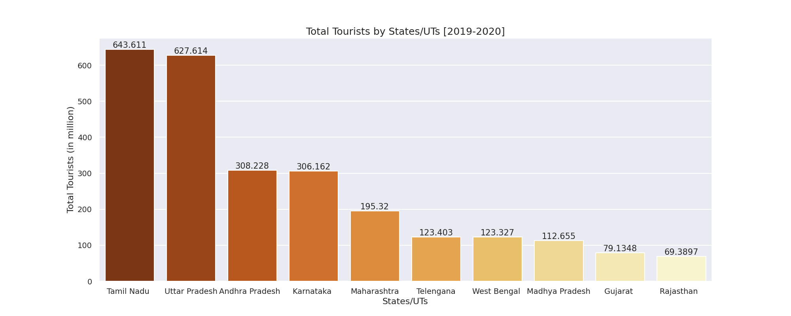
G. Popular monuments during 2019,2020,2021-
1. Top 10 Tourism Destinations visited by foreigners 2019:
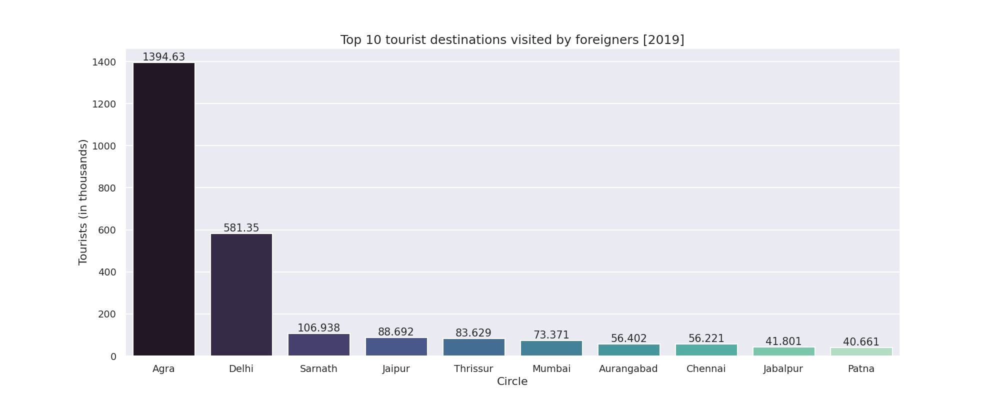
As per the above bar plot, it can be observed that Agra was and is the most popular Tourist
spot followed by Delhi. This can be due to the fact that Taj Mahal which is India's most
recognizable iconic monument, is situated in Agra. And it is also to be noted that since Delhi
is just 200km away from Agra and is also quite famous for its unique monuments, it surely
piques the interests of many tourists visiting India.
2. Top 10 Tourism Destinations visited by domestic travellers 2019:
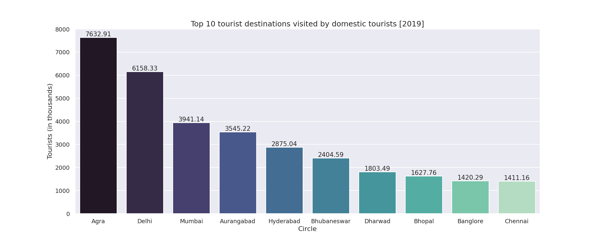
A clear pattern similar to the previous graph can be observed in the above bar plot. Agra and
Delhi are still the most popular tourist destinations even among domestic travellers, while the
rest of the popular tourist zones which are popular for their heritage or their infrastructure are
pretty much newer destinations which are not so popular among the foreign tourists.
3. Top 10 Monuments visited by foreigners 2019:
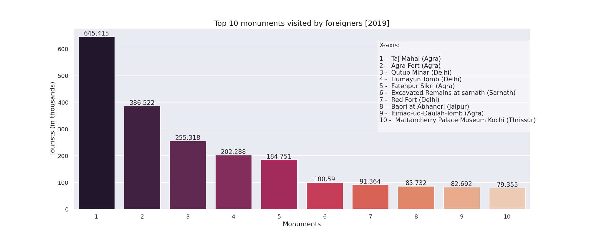
As seen in the popular tourism destinations plot, it is evident from the above bar plot that
most of the popular monuments visited by the FTAs are situated in Agra and Delhi, famous
among them being one of the seven wonders of the world 'Taj Mahal'.
4. Top 10 Monuments visited by domestic travellers 2019:
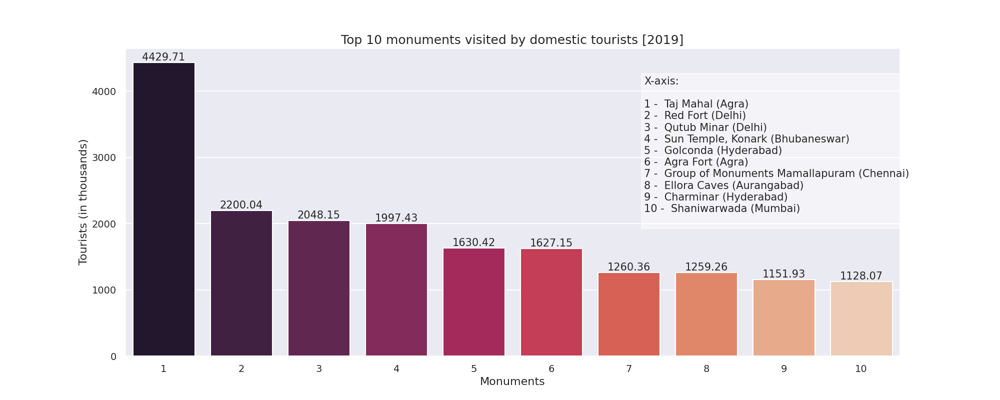
Just like the previous graph, it can be observed in the above bar plot as well that the
monuments located in Agra and Delhi are popular enough, while it can also be observed that
certain monuments which are not so popular have surely piqued the interests of the
domestic travellers.
It can be observed from these plots that all the popular places that are mentioned here
mostly belong to North India. But it doesn't mean the other parts of India aren't faring well!
As we can observe from the popular tourism state plots, it can be concluded that Tamil Nadu
which is pretty popular for its impressive temples and which receives the highest tourists
throughout India is a state from the South!, which is also followed by South Indian states
such as Andhra Pradesh and Karnataka.
But North-East India lags in tourism as a result of insufficient funds, lack of infrastructure,
transportation, lack of alternative means of transport, marketing, boundary issues, terror
effect and permit period. If the government were to take the initiative of developing these
states, then there would be justice done to the tourism sector of these states. After all, North
East India is home to some of the most stunning, diverse and unspoilt scenery in India. From
the snow capped peaks of the soaring Himalayan mountains, to the grassy plains of Assam
and the steamy forests and majestic waterfalls of Meghalaya – North East India showcases
unspoilt nature at its finest!
H. Position of Indian Tourism in the world [2001 - 2021]-

From the above line plot, we can observe that Indian Tourism was improving until 2020 as
COVID-19 restrictions led to a steep decline in tourism. As NRIs were included in the tourism
statistics of India ever since 2014, there was a steep increase in the number of tourists to
India as well as its position w.r.t Tourism in the world.
Conclusion-
Indian tourism developed a lot since the year of 2010 as the investment for the domestic
tourism industry and the foreign tourism industry was increased to a great extent. Many
other factors like transportation, hotel management system and other necessary tourism
components got major upgrades.
Hopefully, India will work towards improving tourism and bring it back to its former glory so it
can continue to improve from here.